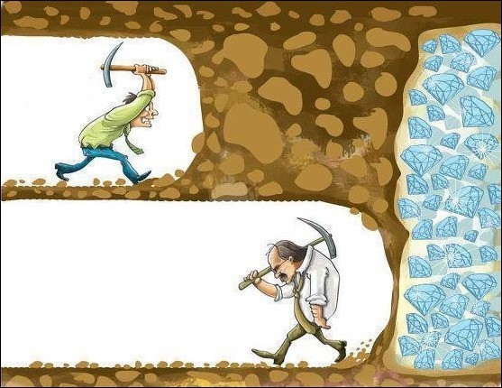

Sobre o Curso
O Curso Como Ganhar Dinheiro Apostando foi criado para transformar iniciantes em apostadores de sucesso, com foco em estratégias inteligentes, controle emocional e gestão de banca eficaz. Nosso objetivo é ensinar você a entender o mercado de apostas e ter lucros consistentes de maneira sustentável.

O que você vai aprender
- Entender as probabilidades e odds.
- Como escolher os melhores mercados de apostas.
- Estratégias vencedoras para esportes específicos.
- Gestão de banca para minimizar riscos e maximizar lucros.
- Controle emocional: a chave para não perder dinheiro nas apostas.
O Curso é Para Você?
Este curso é ideal para você que:
- Está começando no mundo das apostas e quer aprender as melhores estratégias.
- Já faz apostas, mas não tem lucros consistentes e quer melhorar seu desempenho.
- Quer entender como funciona o mercado de apostas e ter uma abordagem profissional.
O que está incluso no curso:
- Aulas práticas e teóricas, com vídeos e materiais complementares.
- Modelos de planilhas para gerenciamento de apostas e lucros.
- Grupo exclusivo para alunos, com suporte direto do instrutor.
- Acesso a atualizações do curso e novos módulos.
Testemunhos de Alunos
Veja o que nossos alunos têm a dizer sobre o curso:
"Eu era completamente iniciante e, com esse curso, consegui desenvolver uma metodologia que me ajudou a ter lucros mensais consistentes. Recomendo!" - Tralaleo tralala
"A abordagem do curso é simples e direta, e o suporte é incrível. Valeu cada centavo investido!" - Brbr Patapim